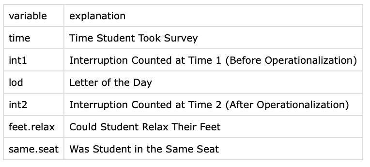
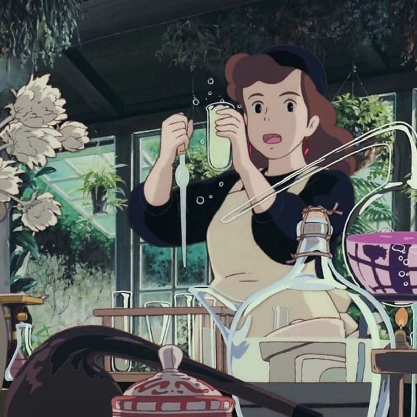
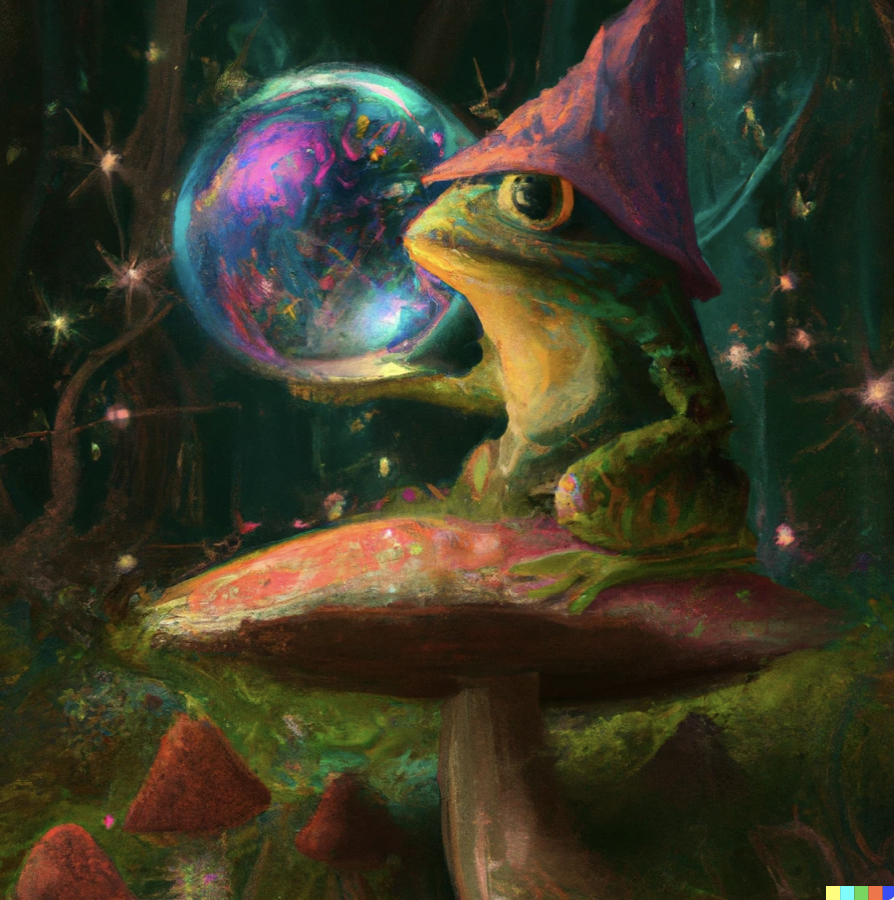

## CHECK-IN : the interruption dataset
## Download the "interruption" dataset and import the data to RStudio.
# Q1. How many individuals are in this dataset?
# Q2. How many variables are in this dataset?
# Q3. What is the value of the second row, third column of this dataset?
# Q4. How many individuals said "yes, I can relax my feet"?
# Q5. How many individuals said "no, my feet were already totally relaxed"?Class 3 | Description
- MINI CLASS DATA IS LIVE : tinyurl.com/miniclassexit
check-in : tinyurl.com/interruptlifewithR
 |
 |
Professor Check-In Code Goes Here
Agenda and Announcements
3:10 - 3:30 | Check-In & Announcements
3:30 - 4:45 | Describing Data in R (and Removing Outliers)
4:45 - 5:00 | BREAK TIME
5:00 - 5:20 | Student Show and Tell
5:20 - 6:00 | Final Project Workshop
Part 1 : Describing Data
Lab 3, Problem 1. Interruption Problems
Download the “interruption” data from bCourses, and import this data into R. This dataset has two variables of the number of interruptions counted before (int1) and after (int2) our operationalization.
Load the data (I’ll call it d if you want to follow along with my code), check to make sure it loaded correctly, and report the sample size and names of the variables.
Graph these variables as a histogram (use the par() function to graph them side by side). Change the arguments so the graphs have the same x-axis and y-axis ranges, and nice labels.
Report the mean, median, range, and standard deviation for both variables. Then, calculate the standard deviation “by hand” for int1 (you should get a similar, but not exact, number, as what R gives you.)
Describe how these statistics changed after operationalizing an interruption, and why these changes make sense given the nature of our operationalizations. Then, decide whether our operationalization would be good enough if we were researchers trying to scientifically study interruptions.
Graph a categorical variable from the dataset and report the frequency of each group.
KEY IDEA : The Mean as Prediction
- How would you feel…
- …if I told you that the average on the R Exam last semester was a 50%?
- …if I told you that the average on the R Exam last semester was a 90%?
- …if someone called you “average”?
- Why would you feel this way?

- Where would a vertical line best fit through these data?
#mini <- read.csv("~/Dropbox/!WHY STATS/Class Datasets/101 - Class Datasets - FA25/mini_cal_data.csv", stringsAsFactors = T)
#plot(mini$hrs.sleep[mini$hrs.sleep < 24])#plot(mini$hrs.sleep[mini$hrs.sleep < 24])
#abline(h = mean(mini$hrs.sleep[mini$hrs.sleep < 24], na.rm = T), col = 'red', lwd = 5)The Mean As Prediction (and Error)
The following equation formalizes this idea, that an individual’s score is related to the mean and error.
\[ \Huge y_i = \bar{Y} + \epsilon_i \]
We can break this up into the following components :
- \(y_i\) = the individual’s (\(_i\)) actual score of a variable (\(y\)) we are trying to predict.
- on the graph : each individual dot; the value on the y-axis is the individual’s score; value of the x-axis is the person’s index (when people submitted the survey).
- \(\bar{Y}\) = our prediction (the mean, in this case)
- on the graph : the solid line is drawn at the mean for the variable.
- \(\epsilon_i\) = residual error
- on the graph : the vertical distance between the predicted values of y (the line) and the individual’s actual value of y (the dot)
I like to remember that an individual’s actual score comes first in the equation, because as researchers we (supposedly) care about REAL PEOPLE and not just data or predictions.
BREAK TIME : MEET BACK AT 4:45
Part 2 : More R Practice
Work on Lab 3, Problem 2.2. Choose another numeric variable from the dataset (see the codebook for a guide). Graph this variable as a histogram, and report the mean, median, standard deviation, and range. Make sure to do any necessary data cleaning (e.g., outlier removal), make the graph look nice, and describe what each descriptive statistic teaches you about the people in the dataset (you do not need to draw them again on the graph, unless you want to / find this helpful!)
Share Your Work With the Class! Post a screenshot of your graph on the class Discord; and then come up to the front to talk about your variable! Yeah?!?
Part 3 : Final Project Workshop
This Week : Decide on a Dependent Variable
- Jasmine :
- MODEL : mental health in muslim community ~ level of spirituality + upbringing + ERROR
- QUESTION : what are some ways Jasmine could focus these variables?
- mental health in muslim community :
- level of spirituality :
- upbringing :
- trauma
- socioeconomic status
- number of parents / caregivers / siblings in the household
- education
- location : immigrant or 2nd-gen or proximity to other muslim community members.
- income.
- QUESTION : what are some ways Jasmine could focus these variables?
- MODEL : mental health in muslim community ~ level of spirituality + upbringing + ERROR
Find some past research on your DV and get started on your literature review.
- Professor ideas go here.